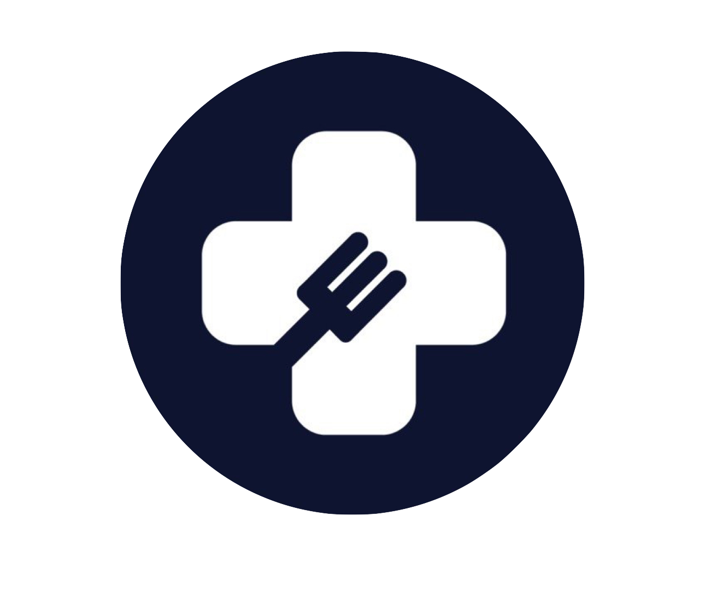
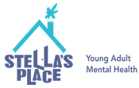
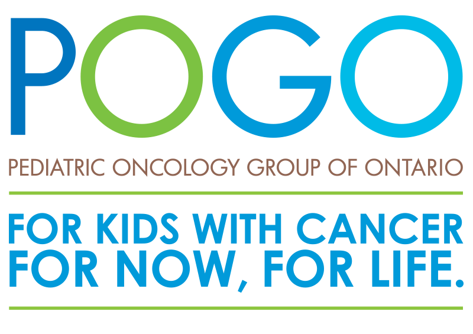
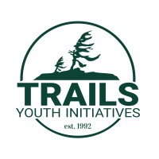

Mission
Run to Give Toronto is an annual charity run that promotes physical activity while also allowing individuals to give back and build deeper connections with their community. Over the last six years, with the support of over 900 participants and donors, we have been able to raise over $140,000 for six different Canadian charities.
The RTG Team is committed to making a difference in our direct community and in the lives of individuals that we interact with on an everyday basis. Your support this year for Run to Give Toronto's charity run will make a significant impact on the lives of Canadian youth struggling with mental illness or substance use disorder. With your help, we can work towards reducing wait times for treatment, increasing access to care, and providing hope for a better future. Thank you for considering this cause and for joining us in making a positive impact in our community and beyond.
Run to Give Toronto Team



